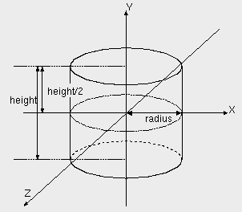

| vfr - Volflex rendering API - |
class vfrCylinder
Class Hierarchy
Header files
- #include "vfrCylinder.h"
- vfrCylinder(const std::string& name VFR_NONAME, const Bool mode = FALSE)
- デフォルトサイズ(底面半径0.5, 高さ1.0)、デフォルトの再分割数(2回)のvfrCylinderオブジェクトを
インスタンスする。
- name オブジェクト名
- mode 自己破壊モード
- vfrCylinder(const float r, const float h, const std::string& name VFR_NONAME, const Bool mode = FALSE)
- 指定された底面半径(r)、高さ(h)のvfrCylinderオブジェクトをインスタンスする。
- r 底面半径
- h 高さ
- name オブジェクト名
- mode 自己破壊モード
- virtual ~vfrCylinder()
- vfrCylinderオブジェクトを破壊する。
public methods / variables
- void setRadius(const float r)
- 底面半径を設定する。
- r 底面半径(デフォルト: 0.5)
- void setHeight(const float h)
- 高さを設定する。
- h 高さ(デフォルト: 1.0)
- void setSubdiv(const int div)
- 再分割数を設定する。
- div 再分割数(デフォルト: 2)
- float getRadius() const
- 底面半径を返す。
- float getHeight() const
- 高さを返す。
- void setShowBottom(Bool sb)
- 底面表示モードを設定する
- sb 底面表示モード
- void setShowTop(Bool st)
- 上面表示モードを設定する
- st 上面表示モード
- Bool showBottom() const
- 底面表示モードを返す
- Bool showTop() const
- 上面表示モードを返す
Description
vfrCylinderクラスは、円柱を表すオブジェクトクラスである。
半径(radius)と高さ(height)が指定されたとき、
以下のような円柱をレンダリングする。

vfrCylinderオブジェクトは、レンダリングモードが
RT_POINTの場合、ローカル座標系の原点位置に一点のみ
ポイントレンダリングを行う。
Subdivision
vfrCylinderオブジェクトは四角柱を基本形状とし、円周方向の一辺を2つに分割する操作を
再帰的に繰り返すことによって円錐を表現する。
再分割操作を何回繰り返すかはsetSubdiv()メソッドで
指定する。
Feedback
vfrCylinderオブジェクトはローカル座標系の原点の頂点情報しか持たない。
そのため、フィードバックテストにおいては、
フィードバックモード属性に応じ、
以下のような結果を返す。
- FB_VERTEX
- ローカル座標系の原点がフィードバックテストに合格したとき、
頂点数 1、頂点番号 0 を返す。
- FB_FACE, FB_EDGE
- フィードバックテストは常に合格数 0 を返す。